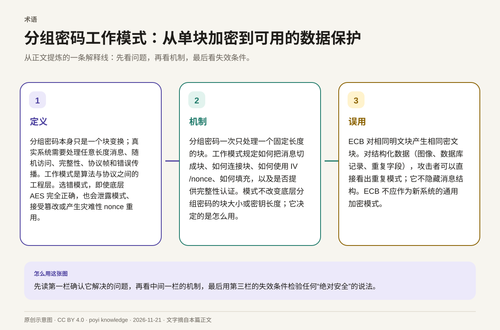

原理与机制
术语：分组密码工作模式（Block Cipher Mode (ECB/CBC/GCM)）。分组密码一次只处理一个固定长度的块。工作模式规定如何把消息切成块、如何连接块、如何使用 IV/nonce、如何填充，以及是否提供完整性认证。模式不改变底层分组密码的块大小或密钥长度；它决定的是怎么用。ECB（Electronic Codebook）对每个块独立加密。相同明文块在同一密钥下产生相同密文块，因此会泄露重复结构。它不需要 IV，也不能隐藏模式。CBC（Cipher Block Chaining）把前一个密文块与当前明文块异或，再加密。第一个块使用 IV。加密是串行的，解密可以并行；IV 不需要保密，但必须不可预测（例如随机生成）。CBC 需要填充，并需要正确处理填充错误。CFB 和 OFB 把分组密码变成流式生成器。CFB 用前一个密文块生成密钥流，解密时使用前一个密文块；OFB 反复加密 IV 生成独立的密钥流，不依赖明文或密文。两者都不需要填充；CFB 的 IV 必须不可预测，OFB 的 IV 必须唯一。CTR（Counter）加密一个计数器块，得到密钥流，再与明文异或。计数器可以由 nonce 和块序号组成；加密和解密都使用同一操作，且可以并行。CTR 不需要填充，但 nonce 重用会重复密钥流。GCM（Galois/Counter Mode）把 CTR 加密与 GHASH 认证组合成 AEAD：它同时输出密文和认证标签，并可认证附加数据（AAD）。GCM 的 nonce 必须唯一；同一密钥下重用 nonce 会破坏认证安全。

为什么重要
分组密码本身只是一个块变换；真实系统需要处理任意长度消息、随机访问、完整性、协议帧和错误传播。工作模式是算法与协议之间的工程层。选错模式，即使底层 AES 完全正确，也会泄露模式、接受篡改或产生灾难性 nonce 重用。模式也是安全目标的分界线。ECB/CBC/CTR 只提供机密性；CBC 的填充错误可能形成 padding oracle；GCM 提供认证加密，但把 nonce 管理责任交给协议。把用了 AES当成系统安全，会忽略模式层的失败。理解模式有助于阅读标准：FIPS 81 在 1980 年为 DES 定义了 ECB、CBC、CFB、OFB；SP 800-38A 在 2001 年给出通用分组密码模式建议；SP 800-38D 在 2007 年标准化 GCM/GMAC。现代协议（如 TLS 1.3）主要使用 AEAD。
应用与实例
模式广泛用于存储加密、网络传输、磁盘加密、数据库字段和协议记录层。CBC 曾长期用于 TLS 和文件加密；CTR 适合并行和随机访问；GCM 因同时提供机密性与完整性，成为 TLS 1.3 等协议的主要 AEAD 选择之一。模式必须与具体算法和协议一起评估。AES-128-GCM 与 AES-128-CBC 的块大小相同，但安全接口不同：前者要求 nonce 唯一并验证标签，后者要求 IV 处理和填充校验。把 CBC 的密文直接当成 GCM 密文，或把 GCM 的标签丢掉，都会破坏安全属性。在教学中，模式适合演示同一算法在不同使用方式下的差异：ECB 的重复模式、CBC 的链接与错误传播、CTR 的 nonce 重用、GCM 的认证失败。这些例子比单独讲 AES 轮函数更接近真实系统的失败方式。
边界与攻击面
ECB 对相同明文块产生相同密文块。对结构化数据（图像、数据库记录、重复字段），攻击者可以直接看出重复模式；它不隐藏消息结构。ECB 不应作为新系统的通用加密模式。### CBC 的 IV、填充与错误传播
CBC 的 IV 必须按协议要求处理；可预测 IV 会泄露首个块的相等关系。CBC 需要填充，填充错误如果以可区分的方式返回，可能形成 padding oracle。翻转一个密文块会破坏对应明文块，并让下一个明文块的同一位置发生可预测翻转——这既是错误传播，也是攻击面。### CTR 的 nonce 重用
CTR 的密钥流只依赖密钥和计数器。同一密钥、同一 nonce 下加密两条消息，两个密文异或等于两个明文异或，密钥流被消掉。攻击者不需要知道密钥就能恢复明文关系。nonce 必须唯一；计数器空间必须够大，不能回绕。### GCM 的 nonce 重用与标签
GCM 在同一密钥下重用 nonce 会重复 CTR 密钥流，并破坏 GHASH 认证；这不是只泄露一点明文，而是可能恢复认证密钥、伪造消息。GCM 的标签必须验证，不能先解密再忽略标签。AAD 只被认证，不被加密。### 模式不能修复块或密钥长度
64 位块的分组密码在 CBC/CTR/CFB/OFB 中仍受生日边界限制；GCM 只定义于 128 位块。任何模式都不会增大密钥；56 位密钥不会因为换模式就变强。模式解决的是使用方式，不是底层算法的参数不足。GCM/CCM 等 AEAD 模式提供完整性，但 nonce 管理、密钥分离、重放防护和错误处理仍属于协议。CBC/CTR 本身不提供完整性；在需要认证的场景，必须外加 MAC 或使用 AEAD。模式实现还要防止侧信道和错误信息泄露。
历史与背景
1980 年，FIPS 81 为 DES 定义了 ECB、CBC、CFB、OFB 四种模式，使分组密码可以处理任意长度数据。2001 年，NIST SP 800-38A 把这些模式推广到通用分组密码，并给出测试向量和参数建议。2007 年，SP 800-38D 标准化 GCM 和 GMAC，把 CTR 加密与 GHASH 认证结合。此后，AEAD 逐渐成为网络协议的主流接口；TLS 1.3 只保留 AEAD 套件，AES-GCM 是其中一种。这段历史说明，模式不是算法的附属品，而是独立的标准层。算法可以不变，模式的选择和 nonce 管理却决定系统是否安全。
逐步示例与核验
SP 800-38A 给出的 AES-128 第一块向量为：密钥 2b7e151628aed2a6abf7158809cf4f3c，明文 6bc1bee22e409f96e93d7e117393172a，IV 000102030405060708090a0b0c0d0e0f。ECB 密文是 3ad77bb40d7a3660a89ecaf32466ef97；CBC 是 7649abac8119b246cee98e9b12e9197d；CFB 和 OFB 的第一块都是 3b3fd92eb72dad20333449f8e83cfb4a；CTR 的 IV 为 f0f1f2f3f4f5f6f7f8f9fafbfcfdfeff，密文是 874d6191b620e3261bef6864990db6ce。本文用 Node/OpenSSL 逐一复现。### NIST CAVP GCM 向量
NIST CAVP 的 gcmEncryptExtIV128.rsp 在 128 位密钥、96 位 IV、128 位明文、无 AAD、128 位标签的参数组下给出 Count 0：密钥 7fddb57453c241d03efbed3ac44e371c，IV ee283a3fc75575e33efd4887，明文 d5de42b461646c255c87bd2962d3b9a2，密文 2ccda4a5415cb91e135c2a0f78c9b2fd，标签 b36d1df9b9d5e596f83e8b7f52971cb3。修改密文或标签后，认证解密必须失败。### ECB 的重复模式
把同一个 16 字节块重复两次，用 ECB 加密会得到两个相同密文块；用 CBC 或 CTR 加密则不同。验证程序对固定数据检查这一点，并明确它不是对 AES 的攻击，而是模式属性。### CTR nonce 重用
同一密钥和 nonce 下，两条明文的密文异或等于两条明文的异或。验证程序用固定数据复算这个关系，再用不同 nonce 得到不同密钥流。它说明 nonce 唯一性是 CTR/GCM 的安全前提。### CBC 位翻转
翻转 CBC 密文第一个块的一个比特，解密后第一个明文块被破坏，第二个明文块的同一比特被翻转。验证程序记录这两个效果；它说明 CBC 的机密性不等于完整性，协议必须另行认证。
参考出处
- Wikipedia search entry for 分组密码工作模式. https://zh.wikipedia.org/w/index.php?search=%E5%88%86%E7%BB%84%E5%AF%86%E7%A0%81%E5%B7%A5%E4%BD%9C%E6%A8%A1%E5%BC%8F
- RFC 4949: Internet Security Glossary, Version 2. https://www.rfc-editor.org/rfc/rfc4949